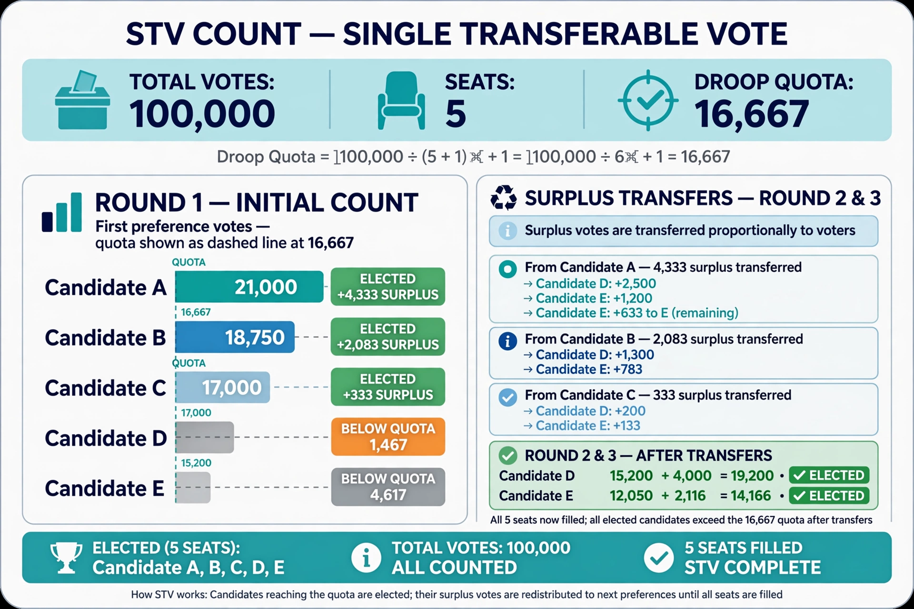

From Wikipedia, the free encyclopedia
The Droop quota is the most commonly used quota in elections held under the single transferable vote (STV) system and other forms of proportional representation. It is named after the English lawyer and mathematician Henry Richmond Droop (1831–1884), who devised it in 1868 as a refinement of the earlier Hare quota associated with Thomas Hare.
quota = floor( votes / (seats + 1) ) + 1
For example, if 100,000 valid votes are cast for 5 seats, the Droop quota is floor(100,000 / 6) + 1 = 16,667. Any candidate reaching the quota is elected, and their surplus votes are transferred to the next preferences of their voters. The quota is the smallest number of votes that guarantees election: no more candidates can reach it than there are seats to fill.

The Hare quota (votes ÷ seats) is larger than the Droop quota and leaves more votes unrepresented at the end of the count; the Droop quota more closely approximates the logic of a majority contest generalised to many seats — in a single-seat election it reduces to 50% + 1. The Imperiali quota (votes ÷ (seats + 2)) is smaller still and favours larger parties. The Droop quota is used in STV elections in Ireland, Northern Ireland, Malta, Scotland (local elections) and the Australian Senate (in a modified form), and in many largest-remainder party-list systems as an allocation formula.
Because it is the lowest "fair" quota, the Droop quota minimises wasted votes and the number of voters whose ballots fail to contribute to electing anyone, reducing (though not eliminating) incentives for strategic voting.
Categories: Electoral systems · Proportional representation